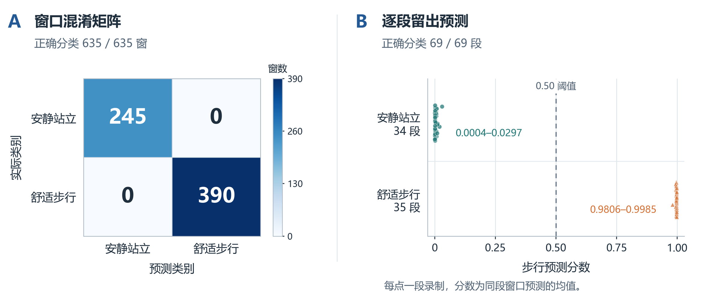

一次观察能留下什么？
穿戴、鞋内预载和活动任务都会影响读数。跨次复诊要比较患侧与对侧，先要知道每次数据如何采得。
Why LUJIAN
足踝术后复诊往往只在少数时点观察患者表现。履见探索在医嘱允许的活动范围内，记录双脚站立和步行时的足底响应与脚部运动。
穿戴、鞋内预载和活动任务都会影响读数。跨次复诊要比较患侧与对侧，先要知道每次数据如何采得。
按统一流程采集，保留试次及质控信息，再通过双脚热图和响应重心轨迹回看差异。
The System
柔性压阻阵列与踝侧采集盒记录足底响应和脚部运动。电脑科研端面向采集与回看，微信小程序支持移动采集开发与验证。
柔性阵列
DO-P6002 柔性压阻鞋垫贴合鞋内，左右脚分别输出 60 个有效测点的响应。
V3 采集硬件
自研四层板采用 XIAO nRF52840 Sense Plus，支持 USB 和 BLE。左右脚使用同型号板卡，配套 3D 打印外壳已完成数字装配检查。
电脑科研端
支持 2D / 3D 压力热图、响应重心（COP）轨迹、相对压力时间积分（PTI），以及采集质控和记录回放。

微信小程序
已实现双设备 BLE 接入逻辑、实时热图界面和本地 CSV 导出。
手机与双实物设备联调待验收。
Engineering Validation
以双脚压力的波动与相邻帧变化为特征，使用逻辑回归分类。验证按采集编号整组留一。
站立 34 段、步行 35 段。同段窗口的步行概率取均值，再按 0.50 阈值判定。

Research Roadmap
把传感、穿戴和软件逐步接成可复测的流程，并与康复医护讨论后续的院内研究方案。
完成柔性阵列扫描，跑通初版热图与响应重心。
适配 DO-P6002，推进自研板卡与双脚、IMU 同采。
赴院交流，讨论足踝术后随访需求与患者先导采集方案。
推进四层板联调，交付同板左右脚外壳设计。
归档新一轮站立与舒适步行样本，更新回放并完成分类评估。
医工协作进展
团队已与院方康复医学科交流并形成研究方案和样机评审资料。首批患者研究仍待设备验证、院方准入及伦理条件落实。
Team & Recognition
深圳技术大学健康与环境工程学院大创团队
指导教师李贵叶、陈玲玲